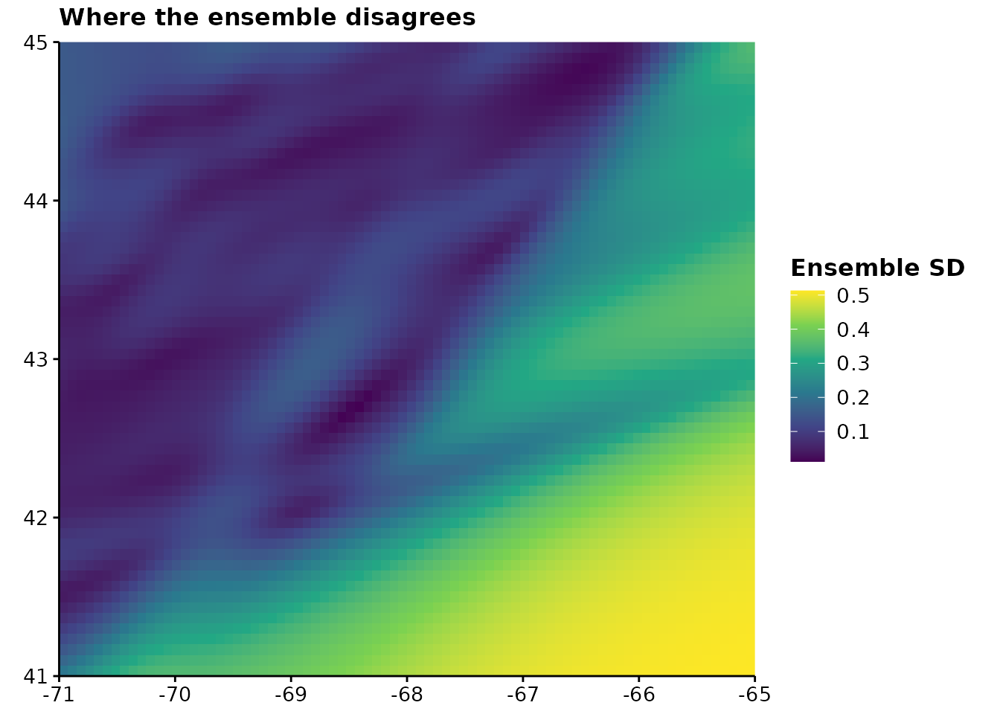
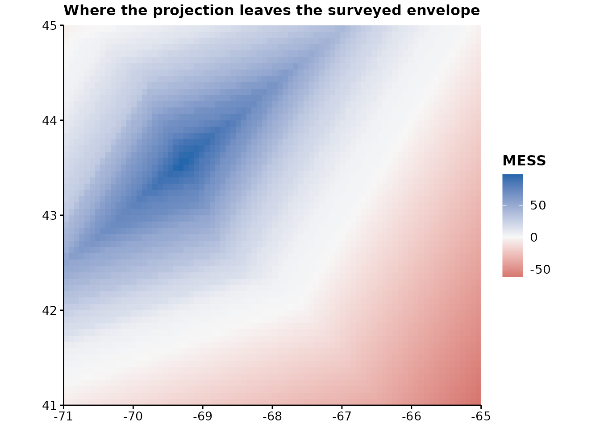
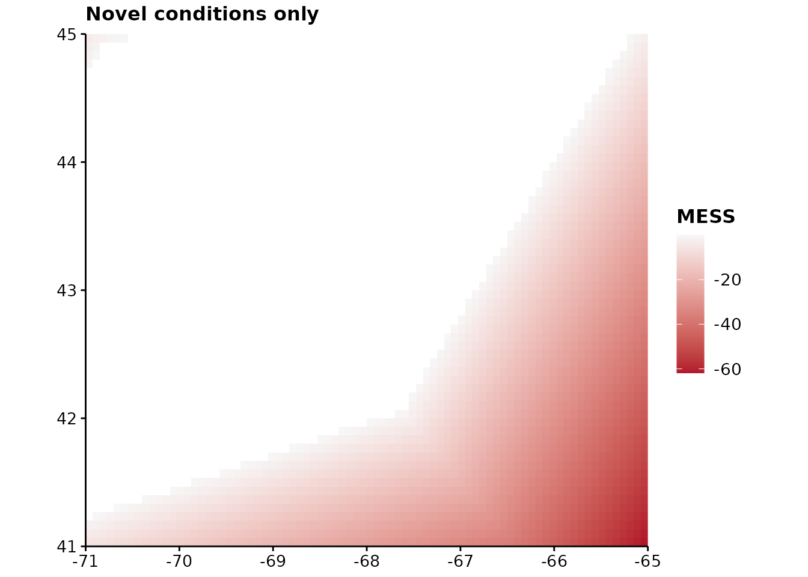
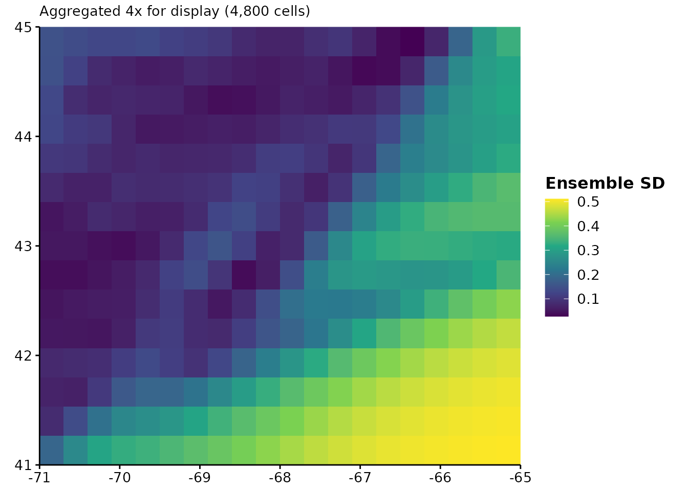
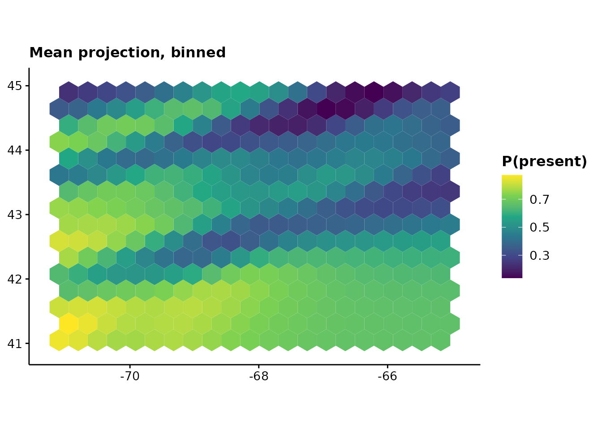
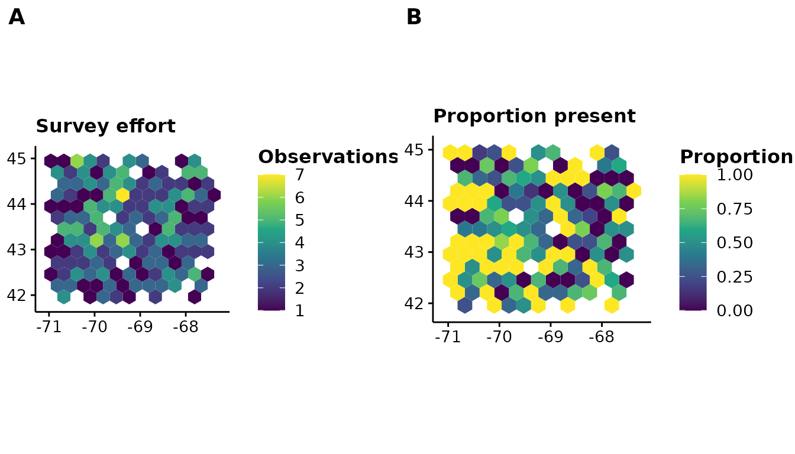

A projection map is a persuasive object. It fills the whole study area with colour, it looks the same whether the model had a thousand observations there or none, and nothing on it distinguishes the part built on evidence from the part built on the model’s willingness to keep predicting.
The two maps here are for putting that distinction back.
terra is a suggested package, not a required one — if
you never project a model, nothing in this vignette gets installed on
your behalf.
A worked example
A small domain with real structure: temperature falls to the north, depth increases offshore, and — the important part — the survey only covers the north-west.
library(terra)
#> terra 1.9.34
set.seed(1)
grid <- rast(nrows = 60, ncols = 80, xmin = -71, xmax = -65,
ymin = 41, ymax = 45, crs = "EPSG:4326")
lon <- init(grid, "x")
lat <- init(grid, "y")
sst <- 14 - 1.2 * (lat - 41) + 0.3 * (lon + 71)
names(sst) <- "sst"
depth <- 20 + 30 * (lon + 71) + 25 * (45 - lat)
names(depth) <- "depth"
covariates <- c(sst, depth)
# The survey: north-west only.
points <- data.frame(lon = runif(400, -71, -67.5), lat = runif(400, 42, 45))
survey <- cbind(points, extract(covariates, points, ID = FALSE))
survey$present <- rbinom(400, 1,
plogis(-4 + 0.45 * survey$sst - 0.01 * survey$depth))
sdm <- mgcv::gam(present ~ s(sst) + s(depth), data = survey,
family = binomial)Where does the ensemble disagree?
A single projection says what one model expects. An ensemble — competing model formulations, emissions scenarios, bootstrap replicates — also says how much that expectation depends on choices you could have made differently.
members <- lapply(1:6, function(i) {
resample <- survey[sample(nrow(survey), replace = TRUE), ]
refit <- mgcv::gam(present ~ s(sst) + s(depth), data = resample,
family = binomial)
terra::predict(covariates, refit, type = "response")
})
ensemble <- rast(members)
names(ensemble) <- paste0("bootstrap", 1:6)
plotUncertainty(ensemble, title = "Where the ensemble disagrees")
statistic chooses what “disagreement” means.
"sd" is the default. "cv" divides by the mean,
which is the right choice on a count or density scale where a spread of
5 means something very different at a mean of 10 than at 1000 — and the
wrong choice for probabilities, where the mean can approach zero and the
ratio explodes.
Uncertainty is a magnitude, so it gets a sequential, perceptually uniform viridis scale. A rainbow would invent boundaries where the data has none, which on an uncertainty map means inventing places the ensemble agreed.
One default worth knowing about
na.rm is FALSE, which is the opposite of
most R summaries and is deliberate. If one member is missing over part
of the domain, summarising the members that remain reports a
narrower uncertainty exactly where the ensemble is
least complete, and nothing on the map would say so. Leaving those cells
blank makes the gap visible.
Where is it extrapolating?
Disagreement is not the same question as novelty. Ensemble members can agree perfectly and all be wrong together, which is precisely what happens when they are all extrapolating into conditions none of them ever saw.
plotExtrapolation(covariates, survey,
title = "Where the projection leaves the surveyed envelope")
This is a MESS surface (Elith et al. 2010). For each cell it asks how similar the covariates are to the values the model was fitted on, and reports the minimum across covariates — one novel variable being enough to invalidate a prediction. Below zero, the cell is outside the training range and the model is extrapolating.
The scale diverges about zero because zero is a real boundary rather than a midpoint of convenience: on one side the model interpolates, on the other it guesses. The poles are red and blue rather than red and green, so the distinction survives the common colour vision deficiencies.
Compare the two maps. The south-east is both where the ensemble disagrees most and where the projection is novel — the honest reading of that region is that the model has nothing to say about it.
To see only the part that matters:
plotExtrapolation(covariates, survey, novel.only = TRUE,
title = "Novel conditions only")
training also accepts the model itself, which saves
passing the data frame around:
plotExtrapolation(covariates, sdm)What MESS does not detect
It works one covariate at a time. A cell can be perfectly ordinary on every axis separately and still be somewhere the model has never been — warm and deep, when the survey saw warm-and-shallow and cold-and-deep but never both together. MESS reports that cell as similar.
Treat a non-negative surface as the absence of one specific problem, not as permission to project.
Large rasters
Real projection rasters run to millions of cells, and drawing one
cell per pixel is both slow and pointless at figure size. Above
max.cells the raster is aggregated first — and the plot
says so in its subtitle, because silently changing what is on the page
would misrepresent the map:
plotUncertainty(ensemble, max.cells = 500)
Binning into hexagons
A raster drawn at native resolution invites the reader to believe every pixel was separately estimated, which is rarely true when the covariates were interpolated from far coarser data. Aggregating to a cell size you can defend is more honest than drawing detail the model does not have.
hex_bin() and plotHexbin() take either a
raster or a data frame of points:
plotHexbin(ensemble_summary(ensemble, "mean"), bins = 20,
title = "Mean projection, binned", legend.lab = "P(present)")
#> Binning unprojected longitude and latitude. A degree of longitude shortens toward the poles, so the hexagons are not equal area and a count per hexagon is not a density. Project the coordinates first if the areas matter.
Hexagons rather than squares for a reason worth stating: every neighbour of a hexagon shares an edge and lies the same distance away, where a square grid has neighbours at two different distances depending on whether they meet at an edge or a corner. That makes hexagons better behaved for anything depending on adjacency, and removes the visual grain a square lattice imposes.
For point data — survey effort, catch, sightings — pass the data frame and say which column to summarise, or omit it to count:
ggpubr::ggarrange(
plotHexbin(survey, fun = "count", bins = 12, coords = c("lon", "lat"),
title = "Survey effort", legend.lab = "Observations"),
plotHexbin(survey, value = "present", bins = 12, coords = c("lon", "lat"),
title = "Proportion present", legend.lab = "Proportion"),
labels = c("A", "B")
)
min.n drops hexagons holding too few values to summarise
— one observation is not a summary of anything, and on a map it is
indistinguishable from a thousand. The returned .n column
reports the count either way.
One caveat the function states itself, once per session: binning unprojected longitude and latitude does not give equal-area hexagons, because a degree of longitude shortens toward the poles. A count per hexagon is then not a density. Project first if the areas matter.
Thinning uneven survey effort
Where records pile up because somewhere was visited often rather than because the species is common there, a model fitted to the raw points learns the sampling as though it were the species.
set.seed(1)
# Four hundred records from one small, heavily surveyed corner; a hundred
# spread over the whole domain.
records <- data.frame(x = c(runif(400, 0, 2), runif(100, 0, 10)),
y = c(runif(400, 0, 2), runif(100, 0, 10)))
thinned <- thin_points(records, n = 1, bins = 12)
c(before = nrow(records), after = nrow(thinned))
#> before after
#> 500 87Thinning is a blunt instrument and it throws data away. It is worth doing when the clustering is an artefact of where people looked, and worth not doing when the clustering is the signal. Nothing in the function can tell those apart, so that judgement stays with you.
The lattice is hexagonal by default, for the same reason
hex_bin() uses one: its cells have neighbours all at equal
distance, so thinning is not subtly directional.
type = "grid" gives squares if you need to match an
existing workflow.
Comparing two predicted distributions
niche_overlap() asks how much two suitability surfaces
have in common — two species, two seasons, or the same species under two
scenarios.
scenario.a <- ensemble_summary(ensemble, "mean")
scenario.b <- scenario.a * 0.9 + 0.05
niche_overlap(scenario.a, scenario.b)
#> D I
#> 0.9870893 0.9998317Both statistics run from 0 to 1, and both rescale each surface to sum to 1 first — so what is compared is the shape of each distribution, not its level. A model predicting uniformly higher suitability can still overlap another perfectly. Schoener’s D uses absolute differences; Warren’s I uses square roots and is less moved by a handful of cells where the two disagree sharply.
Neither is a test. Two surfaces built from the same covariates over
the same domain will overlap substantially whatever the species do, so a
D of 0.7 means little on its own. niche_equivalency()
supplies the missing reference distribution by pooling the two sets of
occurrences, splitting them at random, and refitting:
set.seed(1)
cold <- data.frame(temp = rnorm(60, 8, 1.5))
warm <- data.frame(temp = rnorm(60, 14, 1.5))
axis <- seq(0, 20, length.out = 50)
fit_density <- function(occurrence) {
dnorm(axis, mean(occurrence$temp), sd(occurrence$temp))
}
result <- niche_equivalency(cold, warm, fit_density, n.rep = 99)
c(observed = result$observed, null.median = median(result$null),
p = result$p.value)
#> observed null.median p
#> 0.02386189 0.93702839 0.01000000The observed overlap being lower than the null is the informative result: the two groups occupy measurably different environments. An overlap sitting inside the null distribution means the data cannot distinguish them — which is not the same as showing they are the same.
fit is called 2 * n.rep times, so a slow
model makes a slow test. That cost is inherent: the null has to come
from the same fitting procedure as the observation, or it is testing
something else.
The numbers underneath
Both maps have a computational half that returns a raster, if you would rather compose the figure yourself or write the result out:
spread <- ensemble_summary(ensemble, "sd")
novelty <- mess(covariates, survey)
# How much of the domain is the model extrapolating over?
mean(values(novelty) < 0, na.rm = TRUE)
#> [1] 0.3791667